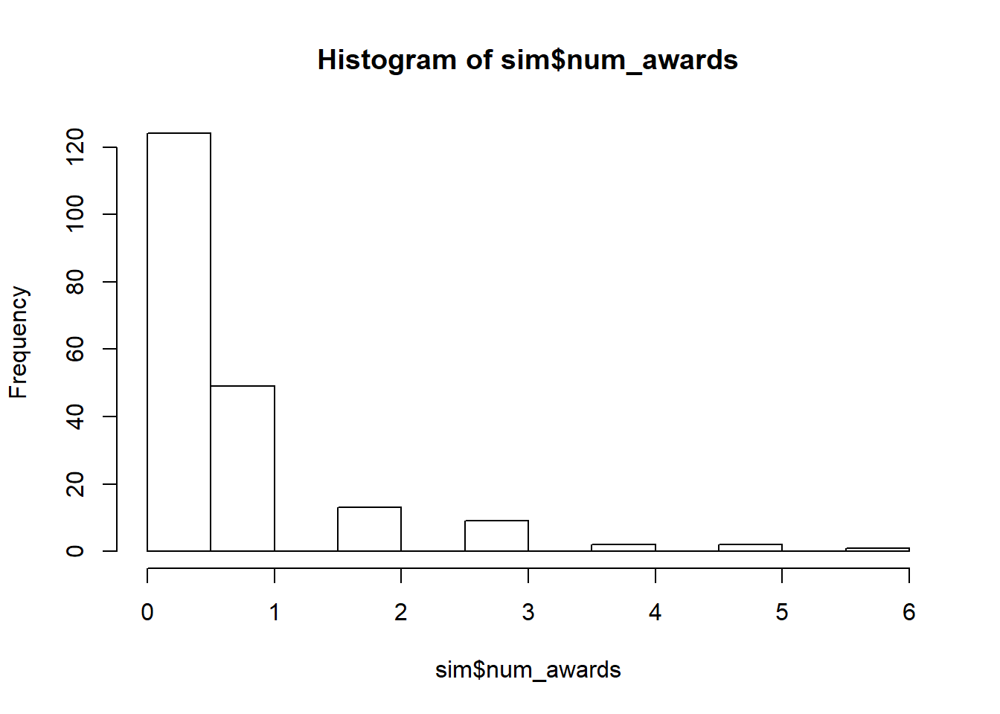

3.13 GLM (Poisson - Logistic)
2020-05-18
3.13.1 exercises
- We want to know if the number of awards earned by students at one high school is associated to the type of program in which the student was enrolled (prog: 1=vocational, 2=general, 3=academic) and the score on their final exam in math (math).
Read the data
| id | num_awards | prog | math | |
|---|---|---|---|---|
| Min. : 1.00 | Min. :0.00 | Min. :1.000 | Min. :33.00 | |
| 1st Qu.: 50.75 | 1st Qu.:0.00 | 1st Qu.:2.000 | 1st Qu.:45.00 | |
| Median :100.50 | Median :0.00 | Median :2.000 | Median :52.00 | |
| Mean :100.50 | Mean :0.63 | Mean :2.025 | Mean :52.65 | |
| 3rd Qu.:150.25 | 3rd Qu.:1.00 | 3rd Qu.:2.250 | 3rd Qu.:59.00 | |
| Max. :200.00 | Max. :6.00 | Max. :3.000 | Max. :75.00 |
table outcome
| 0 | 1 | 2 | 3 | 4 | 5 | 6 |
|---|---|---|---|---|---|---|
| 124 | 49 | 13 | 9 | 2 | 2 | 1 |
fit a poisson regression
##
## Call:
## glm(formula = num_awards ~ prog + math, family = "poisson", data = sim)
##
## Deviance Residuals:
## Min 1Q Median 3Q Max
## -2.2043 -0.8436 -0.5106 0.2558 2.6796
##
## Coefficients:
## Estimate Std. Error z value Pr(>|z|)
## (Intercept) -5.24712 0.65845 -7.969 0.0000000000000016 ***
## prog2 1.08386 0.35825 3.025 0.00248 **
## prog3 0.36981 0.44107 0.838 0.40179
## math 0.07015 0.01060 6.619 0.0000000000362501 ***
## ---
## Signif. codes: 0 '***' 0.001 '**' 0.01 '*' 0.05 '.' 0.1 ' ' 1
##
## (Dispersion parameter for poisson family taken to be 1)
##
## Null deviance: 287.67 on 199 degrees of freedom
## Residual deviance: 189.45 on 196 degrees of freedom
## AIC: 373.5
##
## Number of Fisher Scoring iterations: 6compute relative risks (RR)
| RR | 2.5 % | 97.5 % | |
|---|---|---|---|
| (Intercept) | 0.0052626 | 0.0014003 | 0.0185869 |
| prog2 | 2.9560655 | 1.5450309 | 6.3972554 |
| prog3 | 1.4474585 | 0.6125014 | 3.5467192 |
| math | 1.0726716 | 1.0507422 | 1.0953533 |
plot residuals against predicted
histogram for the outcome

we can chek models zero inflation
library(performance)
check_zeroinflation(poisson, tolerance= 0.05) # tolerance we are willing to acept## # Check for zero-inflation
##
## Observed zeros: 124
## Predicted zeros: 122
## Ratio: 0.98and also dispersion
##
## Overdispersion test
##
## data: poisson
## z = 0.53224, p-value = 0.2973
## alternative hypothesis: true dispersion is greater than 1
## sample estimates:
## dispersion
## 1.047254- A researcher is interested in how variables, such as GRE (Graduate Record Exam scores), GPA (grade point average) and prestige of the undergraduate institution, effect admission into graduate school.
| admit | gre | gpa | rank | |
|---|---|---|---|---|
| Min. :0.0000 | Min. :220.0 | Min. :2.260 | Min. :1.000 | |
| 1st Qu.:0.0000 | 1st Qu.:520.0 | 1st Qu.:3.130 | 1st Qu.:2.000 | |
| Median :0.0000 | Median :580.0 | Median :3.395 | Median :2.000 | |
| Mean :0.3175 | Mean :587.7 | Mean :3.390 | Mean :2.485 | |
| 3rd Qu.:1.0000 | 3rd Qu.:660.0 | 3rd Qu.:3.670 | 3rd Qu.:3.000 | |
| Max. :1.0000 | Max. :800.0 | Max. :4.000 | Max. :4.000 |
fit a logistic regression model
# factor variable rank
school$rank<-factor(school$rank)
logistic <- glm(admit ~ gre + gpa + rank, data = school, family = "binomial")
summary(logistic)##
## Call:
## glm(formula = admit ~ gre + gpa + rank, family = "binomial",
## data = school)
##
## Deviance Residuals:
## Min 1Q Median 3Q Max
## -1.6268 -0.8662 -0.6388 1.1490 2.0790
##
## Coefficients:
## Estimate Std. Error z value Pr(>|z|)
## (Intercept) -3.989979 1.139951 -3.500 0.000465 ***
## gre 0.002264 0.001094 2.070 0.038465 *
## gpa 0.804038 0.331819 2.423 0.015388 *
## rank2 -0.675443 0.316490 -2.134 0.032829 *
## rank3 -1.340204 0.345306 -3.881 0.000104 ***
## rank4 -1.551464 0.417832 -3.713 0.000205 ***
## ---
## Signif. codes: 0 '***' 0.001 '**' 0.01 '*' 0.05 '.' 0.1 ' ' 1
##
## (Dispersion parameter for binomial family taken to be 1)
##
## Null deviance: 499.98 on 399 degrees of freedom
## Residual deviance: 458.52 on 394 degrees of freedom
## AIC: 470.52
##
## Number of Fisher Scoring iterations: 4compute OR and 95%CI
| OR | 2.5 % | 97.5 % | |
|---|---|---|---|
| (Intercept) | 0.0185001 | 0.0018892 | 0.1665354 |
| gre | 1.0022670 | 1.0001376 | 1.0044457 |
| gpa | 2.2345448 | 1.1738582 | 4.3238349 |
| rank2 | 0.5089310 | 0.2722897 | 0.9448343 |
| rank3 | 0.2617923 | 0.1316417 | 0.5115181 |
| rank4 | 0.2119375 | 0.0907155 | 0.4706961 |
plot ORs and CIs

Predict the probability (p) of admission
add a column with the logit values
plot linearity between logit and predictive variables
test models’ goodness of fit
##
## Hosmer and Lemeshow goodness of fit (GOF) test
##
## data: school$admit, fitted(logistic)
## X-squared = 11.085, df = 8, p-value = 0.1969as the p-value is higher than 0.05 we do not reject H0: good fit of the model to the data.
ROC - AUC

determine best cutoff
test.roc<-roc(school$admit, fitted(logistic))
coords(test.roc,"best", res="threshold", transpose = F)| threshold | specificity | sensitivity |
|---|---|---|
| 0.3536984 | 0.7435897 | 0.5748031 |
Confusion matrix
## Confusion Matrix and Statistics
##
## Reference
## Prediction 0 1
## 0 254 19
## 1 97 30
##
## Accuracy : 0.71
## 95% CI : (0.6628, 0.754)
## No Information Rate : 0.8775
## P-Value [Acc > NIR] : 1
##
## Kappa : 0.1994
##
## Mcnemar's Test P-Value : 0.0000000000008724
##
## Sensitivity : 0.7236
## Specificity : 0.6122
## Pos Pred Value : 0.9304
## Neg Pred Value : 0.2362
## Prevalence : 0.8775
## Detection Rate : 0.6350
## Detection Prevalence : 0.6825
## Balanced Accuracy : 0.6679
##
## 'Positive' Class : 0
##